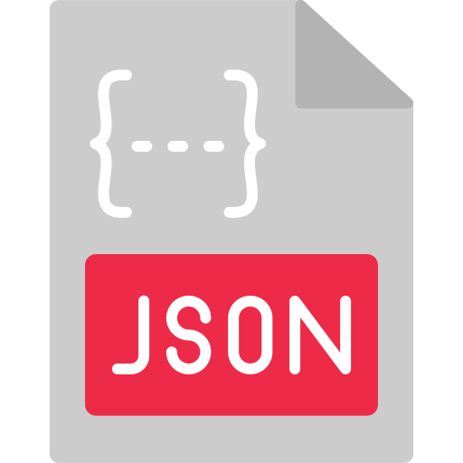

About Me
Teacher turned Developer
From Legos and painting to designing the coolest HTML for my Neopets store and Myspace page in highschool, I've always been drawn to building and creating.
I attended CSU Chico and became a teacher so that I could share my love of learning with the world.
As a teacher, I worked in "Professional Learning Communities" where we analyzed student data to direct our instruction in collaborative teams.
I managed a classroom of students, parent volunteers and classroom aides. During the pandemic, my role as a teacher required a rapid adaptation
to new technologies and an ongoing commitment to staying current with tech trends. As schools shifted to remote learning, I embraced this challenge and
leveraged various digital tools to ensure uninterrupted education for my students. I began learning new software so quickly and efficiently that
I was soon leading professional development on it for the other teachers on my campus. This got me thinking, what if I pursued my love of technology and
transitioned to tech?
After over 6 months of exploring coding for fun in my free time, I enrolled in a full-stack coding bootcamp learning HTML, CSS, Javascript,
Python, Django, React.js, MongoDB, Express, Node.js and more. I have now been coding for about a year. I have the most fun when I am working
on a project and exploring new skills. I've created browser games and multiple full stack web applications. I am a committed lifelong
learner and the beautiful part of programming is that there is always something new to learn.
Skills


- 


.png) Linked In
Linked In GitHub
GitHub